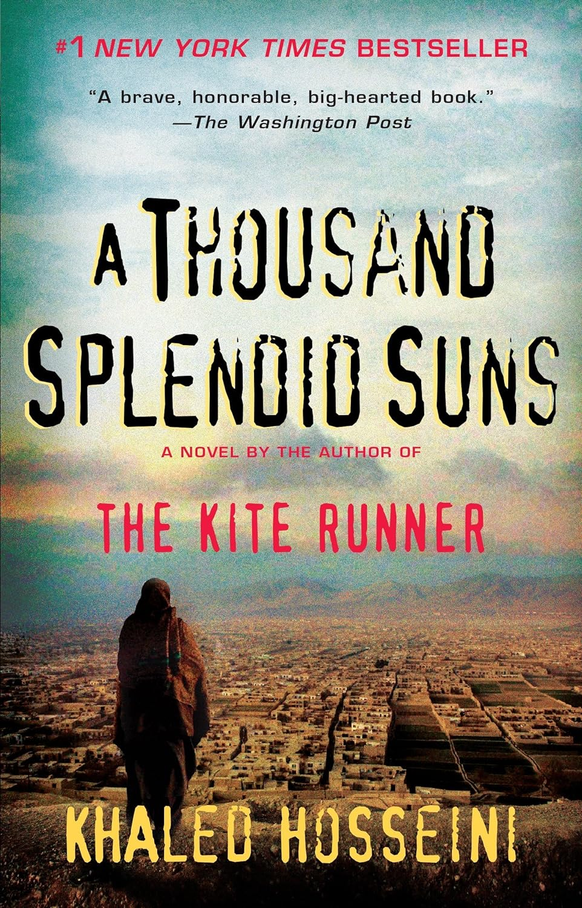
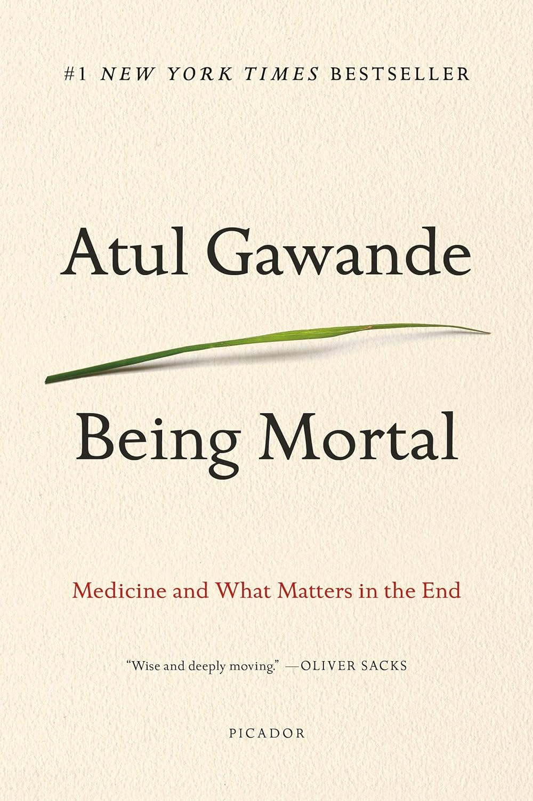
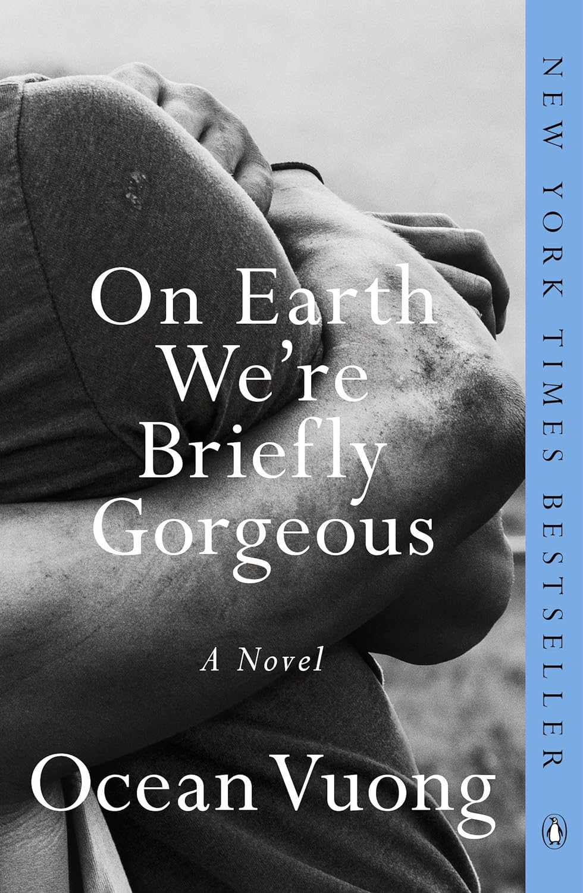

A Thousand Splendid Suns
Khaled Hosseini
Rating: 9/10
Reading a book by Khaled Hosseini is not easy. Anyone who has read
any of his books can attest to this. There is tragedy after tragedy
after tragedy. There were several times when I had to stop reading
because of the unimaginable, yet very real, atrocities that
the protagonists were experiencing. While this novel is fictional,
I believe Hosseini draws from real life experiences. In that regard,
it's a devastating novel that I strongly recommend for everyone to read
because there real people who have or are experiencing similar catastrophies
that we (Americans) don't think about.

Being Mortal
Atul Gawande
Rating: 7.5/10
This was a wonderful read about dying, which might seem like a very odd sentiment,
but Gawande has helped me make peace with my mortality (I'm only a 20 something year old
so maybe take that with a grain of salt). He brings into light what dying people find to
be most important in life and it's a much needed reminder to truly enjoy it. Personally, it's
so easy to get caught up in school and work and doing the "right" things that I forget to take
in all the wonderful things about life.

On Earth We're Briefly Gorgeous
Ocean Vuong
Rating: 8/10
This novel was so wonderfully written and for the first time ever, I felt like I understood
literature. I never quite liked typical American literature because I just never "got" it.
I think I "got" Vuong for the most part, and it was painful. This is a novel I'd want to read
multiple times so that I can fully appreciate it.
